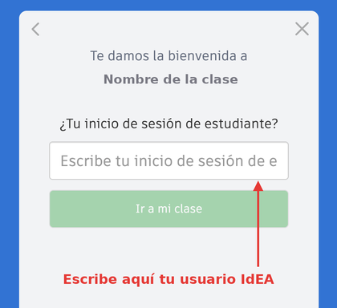
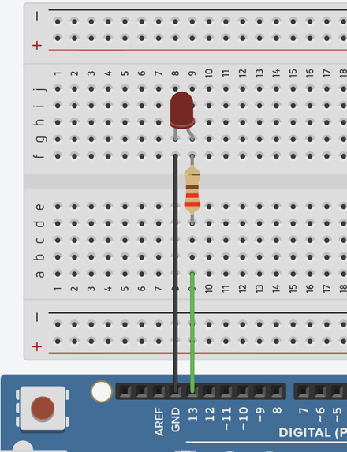

Tarea 2 de 3. Se entrega en Classroom, en la tarea «Tarea 2 · Mi primer sistema automático».
Qué vas a hacer
Vas a montar y programar un semáforo con pulsador para peatones, como los de los pasos de cebra: está en verde y, cuando alguien pulsa el botón, pasa a amarillo, después a rojo y vuelve a verde.
Todo se hace en TinkerCAD, un simulador: montas el circuito y lo pruebas en la pantalla, sin componentes de verdad. El programa se hace con bloques.
- Tiempo: unas 3 o 4 horas. Puedes hacerlo en varios ratos: TinkerCAD guarda tu trabajo solo.
- Qué necesitas: un ordenador con internet y tu usuario IdEA.
- Qué entregas: el documento de la tarea de Classroom, con tres capturas y unas respuestas cortas.
Paso a paso
Paso 1 · Entra en la clase de TinkerCAD
- Abre el enlace de la clase: clase de TinkerCAD de la recuperación.
- Verás «Te damos la bienvenida a PENDIENTE CYR 3º». Pulsa «Unirte con el inicio de sesión de estudiante».
- Escribe tu usuario IdEA (el mismo de Classroom, pero sin la parte
@g.educaand.es) y pulsa «Ir a mi clase».


Guarda el enlace de la clase: lo necesitarás cada vez que vuelvas a entrar.
Paso 2 · Crea el circuito y pon el pulsador
- Pulsa «+ Crear» y elige «Circuitos». Se abre un circuito vacío con un nombre inventado: haz clic en ese nombre, arriba a la izquierda, y escribe
Semáforo. - En el panel de la derecha, abre el desplegable de arriba (pone «Componentes · Básico») y elige Starters → «Arduino».
- Arrastra el starter «Botón» al área de trabajo. Trae ya una placa Arduino con un pulsador conectado al pin 2 con su resistencia, y un programa de ejemplo.
- Vuelve a abrir el desplegable y elige Componentes → «Básico». Arrastra una «Placa de pruebas pequeña» junto al Arduino.
Paso 3 · Monta las tres luces
Cada luz es un LED con su resistencia de 220 Ω, conectado a un pin del Arduino. Así se monta una, la del pin 13:

Ampliar imagen (nueva pestaña)
Monta tres, una para cada color:
| Luz | Color del LED | Pin del Arduino |
|---|---|---|
| Roja | Rojo | 13 |
| Amarilla | Amarillo | 12 |
| Verde | Verde | 11 |
- Color del LED: haz clic en el LED y, en el recuadro que aparece, cambia «Color».
- Valor de la resistencia: haz clic en ella y, en «Resistencia», escribe
220y elige Ω en las unidades. - Cables: haz clic en un punto y después en el otro. La patilla larga del LED (la doblada) va hacia la resistencia y el pin; la corta, hacia GND.
Si una luz no se enciende, repasa
- Las dos patillas de un componente van en columnas distintas de la placa de pruebas, nunca en la misma.
- El LED está en el sentido correcto: patilla larga hacia el pin, corta hacia GND.
- Cada LED tiene su resistencia de 220 Ω.
Paso 4 · Programa el semáforo
- Pulsa «Código» (arriba). Verás en bloques el programa que trae el starter: dentro de «siempre» lee el pulsador con «leer pin digital 2» y, con «si … entonces / si no», hace una cosa cuando está pulsado (vale ALTA) y otra cuando no.
- Quita los dos bloques «definir LED integrado en …»: arrástralos a la papelera, abajo a la derecha. Los bloques grises de comentario puedes dejarlos o quitarlos.
- Cuando nadie pulsa (dentro de «si no»): con el bloque «definir pin … en …» de la categoría «Salida», pon el verde (pin 11) en ALTA y el amarillo (12) y el rojo (13) en BAJA.
- Cuando alguien pulsa (dentro de «entonces»): con «definir pin … en …» y con «esperar … segundos» (categoría «Control»), haz esta secuencia: se apaga el verde, se enciende el amarillo durante 2 segundos, se apaga, se enciende el rojo durante 5 segundos y se apaga.
Piensa bien el orden de los bloques: el Arduino los hace de arriba abajo, uno detrás de otro.
Paso 5 · Pruébalo
- Pulsa «Iniciar simulación». Debe encenderse el verde.
- Haz clic sobre el pulsador. Debe pasar a amarillo, después a rojo y volver a verde.
- Para parar la simulación, vuelve a pulsar ese mismo botón de arriba.
Si algo no va, comprueba primero los pines de la tabla del paso 3: el número del bloque tiene que coincidir con el pin al que conectaste cada luz.
Paso 6 · Haz las tres capturas
Haz una captura de pantalla de cada una de estas cosas (tecla Impr Pant o la herramienta de capturas de tu ordenador):
- El circuito completo, sin simular.
- El programa de bloques, que se vea entero.
- La simulación con el rojo encendido, después de pulsar. Tienes 5 segundos: pulsa y haz la captura enseguida.
Cómo entregar
- Entra en Google Classroom, en la clase de la recuperación, y abre la tarea «Tarea 2 · Mi primer sistema automático».
- Abre el documento que trae la tarea: ya es tu copia.
- Pega las tres capturas donde indica (Insertar → Imagen → Subir desde el ordenador) y responde a las preguntas.
- Pulsa «Entregar».
Después recibirás comentarios. Si quieres mejorar tu trabajo, puedes hacerlo mientras la tarea siga abierta: pulsa «Anular entrega», cambia lo que haga falta en el documento y vuelve a pulsar «Entregar».
¿Tienes dudas? Escríbelas en un comentario privado dentro de la tarea.
Cómo se califica
Esta tarea cuenta para tres aprendizajes. Cada uno tiene su propia nota, de 0 a 10.
| Aprendizaje | En qué se fija quien corrige |
|---|---|
| Conocer los componentes | La tabla de componentes del documento está completa. Dices bien qué es cada uno: entrada, salida o el que controla. Explicas para qué sirve cada uno en tu semáforo. |
| Programar | El programa lee el pulsador y usa «si … entonces / si no». La secuencia es la correcta: verde, amarillo, rojo y otra vez verde. Los tiempos son los pedidos. Explicas con tus palabras qué hace tu programa. |
| Construir y probar el sistema | Las tres luces están montadas, cada una con su resistencia y en su pin. El circuito funciona en la simulación: se ve en la captura con el rojo encendido. |